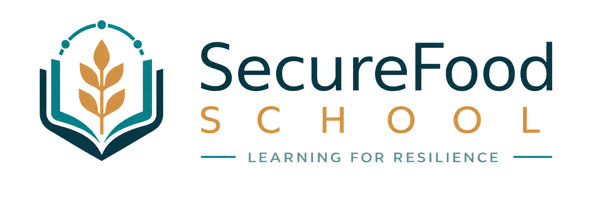
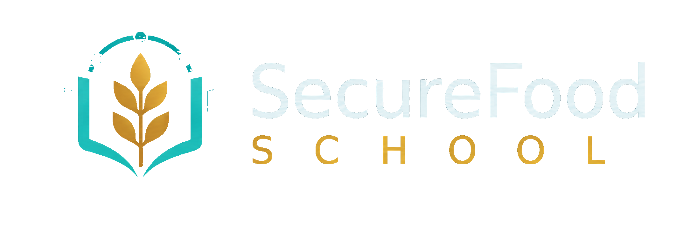

<!DOCTYPE html>
<html lang="en" data-theme="light">
<head>
<meta charset="UTF-8">
<meta name="viewport" content="width=device-width, initial-scale=1.0">
<title>SecureFood School · About the Project</title>
<link rel="stylesheet" href="./styles.css">
<link rel="stylesheet" href="https://unpkg.com/leaflet@1.9.4/dist/leaflet.css">
<style>
.school-hero {
  position: relative;
  border-radius: var(--radius-lg);
  padding: 48px 52px;
  background: radial-gradient(120% 80% at 100% 0%, rgba(224,164,88,0.18), transparent 55%),
              linear-gradient(135deg, #0F4C5E 0%, #143E4D 60%, #0B2A35 100%);
  color: #fff;
  overflow: hidden;
  margin-bottom: 28px;
  isolation: isolate;
}
.school-hero .hero-inner {
  position: relative;
  z-index: 2;
  display: grid;
  grid-template-columns: 1.4fr 1fr;
  gap: 36px;
  align-items: center;
}
.school-hero .kicker {
  display: inline-flex;
  align-items: center;
  gap: 8px;
  font-size: 0.78rem;
  font-weight: 700;
  text-transform: uppercase;
  letter-spacing: 0.14em;
  color: #E0A458;
  margin-bottom: 16px;
}
.school-hero .kicker::before {
  content: '';
  width: 22px;
  height: 2px;
  background: #E0A458;
}
.school-hero h1 {
  color: #fff;
  font-size: 2.6rem;
  line-height: 1.1;
  margin-bottom: 14px;
  letter-spacing: -0.02em;
}
.school-hero h1 .accent { color: #E0A458; }
.school-hero p.lede {
  color: rgba(255,255,255,0.85);
  font-size: 1.05rem;
  line-height: 1.55;
  max-width: 56ch;
}
.hero-stats-strip {
  margin-top: 28px;
  display: grid;
  grid-template-columns: repeat(4, 1fr);
  gap: 0;
  border-top: 1px solid rgba(255,255,255,0.12);
  padding-top: 22px;
}
.hero-stats-strip .stat {
  padding: 0 18px;
  border-right: 1px solid rgba(255,255,255,0.12);
}
.hero-stats-strip .stat:first-child { padding-left: 0; }
.hero-stats-strip .stat:last-child { border-right: none; }
.hero-stats-strip .num {
  font-family: 'Manrope';
  font-weight: 800;
  font-size: 1.8rem;
  color: #fff;
  letter-spacing: -0.02em;
  line-height: 1;
}
.hero-stats-strip .lbl {
  font-size: 0.72rem;
  color: rgba(255,255,255,0.7);
  text-transform: uppercase;
  letter-spacing: 0.08em;
  font-weight: 600;
  margin-top: 6px;
}
.hero-visual {
  position: relative;
  aspect-ratio: 5 / 4;
  display: grid;
  place-items: center;
}
.hero-orb {
  position: absolute;
  border-radius: 50%;
  filter: blur(2px);
  opacity: 0.6;
}
.hero-orb.o1 {
  inset: 8% 10% auto auto;
  width: 220px;
  height: 220px;
  background: radial-gradient(circle, rgba(224,164,88,0.6), transparent 60%);
  animation: orbFloat 9s ease-in-out infinite;
}
.hero-orb.o2 {
  inset: auto 30% 6% auto;
  width: 160px;
  height: 160px;
  background: radial-gradient(circle, rgba(79,195,192,0.5), transparent 60%);
  animation: orbFloat 11s ease-in-out infinite reverse;
}
.hero-orb.o3 {
  inset: 30% auto auto 10%;
  width: 110px;
  height: 110px;
  background: radial-gradient(circle, rgba(255,255,255,0.3), transparent 60%);
  animation: orbFloat 7s ease-in-out infinite;
}
@keyframes orbFloat {
  0%, 100% { transform: translate(0,0) scale(1); }
  50% { transform: translate(10px, -14px) scale(1.06); }
}
.hero-emblem {
  position: relative;
  z-index: 2;
  width: min(560px, 100%);
  height: auto;
  border-radius: 18px;
  background: rgba(255,255,255,0.06);
  border: 1px solid rgba(255,255,255,0.12);
  display: grid;
  place-items: center;
  padding: 14px 20px;
  backdrop-filter: blur(6px);
  box-shadow: 0 20px 60px -20px rgba(0,0,0,0.4);
}
.hero-emblem img { width: 100%; height: auto; display: block; }
.hero-emblem img.about-logo-full { max-width: 500px; }
.hero-bg-grid {
  position: absolute;
  inset: 0;
  background-image:
    linear-gradient(rgba(255,255,255,0.04) 1px, transparent 1px),
    linear-gradient(90deg, rgba(255,255,255,0.04) 1px, transparent 1px);
  background-size: 36px 36px;
  -webkit-mask-image: radial-gradient(circle at 30% 50%, black, transparent 75%);
  mask-image: radial-gradient(circle at 30% 50%, black, transparent 75%);
  pointer-events: none;
  z-index: 1;
  overflow: hidden;
}
.hero-bg-grid .grid-ray {
  position: absolute;
  left: 0;
  top: 0;
  width: var(--len, clamp(220px, 24vw, 360px));
  height: 3px;
  border-radius: 999px;
  opacity: 0;
  transform-origin: 0 50%;
  will-change: transform, opacity;
  mix-blend-mode: screen;
  filter: blur(0.6px);
  background: linear-gradient(90deg, rgba(79,195,192,0), rgba(79,195,192,var(--intensity,0.42)) 52%, rgba(79,195,192,0));
  animation: rayScatter var(--dur,7.4s) ease-out var(--delay,-2s) infinite;
}
.hero-bg-grid .grid-ray.warm {
  background: linear-gradient(90deg, rgba(224,164,88,0), rgba(224,164,88,var(--intensity,0.36)) 50%, rgba(224,164,88,0));
}
@keyframes rayScatter {
  0% {
    opacity: 0;
    transform: translate(var(--x, 0px), var(--y, 0px)) rotate(var(--angle, 0deg)) scaleX(0.18);
  }
  10% {
    opacity: var(--peak, 0.16);
  }
  60% {
    opacity: calc(var(--peak, 0.16) * 0.58);
  }
  84% {
    opacity: 0;
  }
  100% {
    opacity: 0;
    transform: translate(calc(var(--x, 0px) + var(--dx, 150px)), calc(var(--y, 0px) + var(--dy, 110px))) rotate(var(--angle, 0deg)) scaleX(1);
  }
}
@media (prefers-reduced-motion: reduce) {
  .hero-bg-grid .grid-ray {
    animation-duration: 18s;
    animation-timing-function: linear;
    --peak: 0.12;
    --intensity: 0.2;
  }
}
.mission-band {
  position: relative;
  padding: 36px;
  background: var(--surface);
  border: 1px solid var(--line);
  border-radius: var(--radius-md);
  margin-bottom: 28px;
  overflow: hidden;
}
.mission-band::before {
  content: '';
  position: absolute;
  width: 280px;
  height: 280px;
  right: -40px;
  top: -120px;
  background: radial-gradient(circle, rgba(68,161,160,0.14), transparent 65%);
  border-radius: 50%;
  pointer-events: none;
}
.mission-band-grid {
  position: relative;
  z-index: 1;
  display: grid;
  grid-template-columns: 1fr 1.4fr;
  gap: 36px;
  align-items: center;
}
.mission-band .kicker {
  color: var(--accent);
  font-size: 0.72rem;
  font-weight: 700;
  text-transform: uppercase;
  letter-spacing: 0.12em;
  display: inline-flex;
  align-items: center;
  gap: 8px;
  margin-bottom: 10px;
}
.mission-band .kicker::before {
  content:'';
  width:22px;
  height:2px;
  background: var(--accent);
}
.mission-band h2 { font-size: 1.8rem; margin-bottom: 12px; }
.mission-band p { color: var(--ink-2); line-height: 1.65; font-size: 0.96rem; }
.l4c-loop {
  display: grid;
  grid-template-columns: repeat(2, 1fr);
  gap: 12px;
}
.l4c-step {
  padding: 16px;
  border-radius: var(--radius-sm);
  background: var(--surface-2);
  border: 1px solid var(--line);
  position: relative;
  overflow: hidden;
}
.l4c-step::before {
  content: '';
  position: absolute;
  width: 60px;
  height: 60px;
  border-radius: 50%;
  right: -20px;
  top: -20px;
  background: radial-gradient(circle, var(--accent-50), transparent 70%);
}
.l4c-step .step-num {
  font-family: 'Manrope';
  font-weight: 800;
  font-size: 0.78rem;
  color: var(--accent);
  letter-spacing: 0.08em;
  text-transform: uppercase;
}
.l4c-step h4 {
  font-size: 1rem;
  margin: 6px 0 4px;
  position: relative;
  z-index: 1;
}
.l4c-step small {
  font-size: 0.82rem;
  color: var(--muted);
  line-height: 1.45;
}
.project-context {
  display: grid;
  grid-template-columns: 1.3fr 1fr;
  gap: 22px;
  margin-bottom: 28px;
}
.project-card {
  padding: 32px;
  background: var(--surface);
  border: 1px solid var(--line);
  border-radius: var(--radius-md);
}
.project-card .euband {
  display: inline-flex;
  align-items: center;
  gap: 8px;
  background: var(--primary-50);
  color: var(--primary);
  padding: 6px 12px;
  border-radius: 999px;
  font-size: 0.78rem;
  font-weight: 600;
  margin-bottom: 14px;
}
.project-card h2 { font-size: 1.6rem; margin-bottom: 12px; }
.project-card .lede { color: var(--ink-2); line-height: 1.65; margin-bottom: 14px; }
.shield-card {
  padding: 28px;
  border-radius: var(--radius-md);
  background:
    radial-gradient(120% 80% at 0% 100%, rgba(224,164,88,0.18), transparent 60%),
    linear-gradient(160deg, #0F4C5E 0%, #143E4D 100%);
  color: #fff;
  position: relative;
  overflow: hidden;
}
.shield-card h3 { color: #fff; font-size: 1.3rem; margin-bottom: 16px; }
.shield-card .pillar-list { display: grid; gap: 12px; }
.shield-pillar {
  display: flex;
  gap: 12px;
  align-items: flex-start;
  padding: 10px 0;
}
.shield-pillar .num {
  width: 28px;
  height: 28px;
  border-radius: 50%;
  background: rgba(224,164,88,0.2);
  color: #E0A458;
  display: grid;
  place-items: center;
  font-family: 'Manrope';
  font-weight: 700;
  font-size: 0.82rem;
  flex-shrink: 0;
}
.shield-pillar .body strong { color: #fff; font-size: 0.96rem; }
.shield-pillar .body small {
  display: block;
  color: rgba(255,255,255,0.72);
  font-size: 0.84rem;
  margin-top: 4px;
  line-height: 1.45;
}
.sector-grid { display: grid; grid-template-columns: repeat(4, 1fr); gap: 14px; margin-bottom: 22px; }
.sector { padding: 18px; border: 1px solid var(--line); border-radius: var(--radius-md); background: var(--surface); display: flex; align-items: center; gap: 14px; }
.sector .icon { width: 48px; height: 48px; border-radius: var(--radius-sm); display: grid; place-items: center; color: #fff; flex-shrink: 0; }
.sector .icon .material-symbols-rounded { font-size: 26px; }
.sector h4 { font-size: 1rem; margin-bottom: 2px; }
.sector small { color: var(--muted); font-size: 0.8rem; }
.partners-card { padding: 26px 22px; }
.partners-card .partners-head { display: flex; justify-content: space-between; align-items: flex-end; gap: 16px; flex-wrap: wrap; margin-bottom: 18px; }
.partners-card .partners-head .lede { color: var(--muted); font-size: 0.88rem; max-width: 540px; line-height: 1.5; }
.partners-legend { display: flex; gap: 14px; flex-wrap: wrap; }
.partners-legend .leg { display: inline-flex; align-items: center; gap: 6px; font-size: 0.78rem; color: var(--muted); font-weight: 500; }
.partners-legend .leg .dot { width: 8px; height: 8px; border-radius: 50%; }
.partners-grid { display: grid; grid-template-columns: repeat(auto-fill, minmax(220px, 1fr)); gap: 12px; }
.partner-card {
  display: grid; grid-template-columns: 44px 1fr;
  gap: 12px; align-items: center;
  padding: 14px;
  background: var(--surface);
  border: 1px solid var(--line);
  border-radius: var(--radius-md);
  transition: box-shadow .15s, border-color .15s, transform .15s;
}
.partner-card:hover { border-color: var(--primary); box-shadow: var(--shadow-2); transform: translateY(-1px); }
.partner-card .logo {
  width: 44px; height: 44px; border-radius: 10px;
  display: grid; place-items: center;
  font-family: 'Manrope'; font-weight: 800; font-size: 0.78rem;
  color: #fff; letter-spacing: 0.02em;
  position: relative;
}
.partner-card .logo .flag {
  position: absolute; bottom: -3px; right: -4px;
  font-size: 14px; line-height: 1; padding: 1px;
  background: var(--surface); border: 1px solid var(--line);
  border-radius: 50%;
  width: 18px; height: 18px; display: grid; place-items: center;
}
.partner-card .info { min-width: 0; }
.partner-card .name {
  font-family: 'Manrope'; font-weight: 700;
  color: var(--ink); font-size: 0.92rem;
  letter-spacing: 0.01em;
  white-space: nowrap; overflow: hidden; text-overflow: ellipsis;
}
.partner-card .meta { font-size: 0.74rem; color: var(--muted); margin-top: 2px; display: flex; gap: 6px; align-items: center; }
.partner-card .meta .role-dot { width: 6px; height: 6px; border-radius: 50%; flex-shrink: 0; }
.partner-card .meta .city { white-space: nowrap; overflow: hidden; text-overflow: ellipsis; }
@media (max-width: 1100px) {
  .school-hero .hero-inner { grid-template-columns: 1fr; }
  .mission-band-grid, .project-context { grid-template-columns: 1fr; }
  .hero-visual { display: none; }
  .hero-stats-strip { grid-template-columns: repeat(2, 1fr); }
  .hero-stats-strip .stat {
    padding: 12px;
    border-right: none;
    border-bottom: 1px solid rgba(255,255,255,0.12);
  }
  .sector-grid { grid-template-columns: repeat(2, 1fr); }
}
@media (max-width: 700px) {
  .school-hero { padding: 32px 24px; }
  .school-hero h1 { font-size: 2rem; }
  .l4c-loop { grid-template-columns: 1fr; }
}
</style>
<script src="./js/shell.js"></script>
</head>
<body data-page="insights">
<script>
SF.mount(
  { crumb: ['Dashboard', 'About the Project'] },
  `
    <section class="school-hero">
      <div class="hero-bg-grid" id="heroGridRays">
        <span class="grid-ray"></span>
        <span class="grid-ray warm"></span>
        <span class="grid-ray"></span>
        <span class="grid-ray warm"></span>
        <span class="grid-ray"></span>
        <span class="grid-ray warm"></span>
        <span class="grid-ray"></span>
        <span class="grid-ray warm"></span>
      </div>
      <div class="hero-inner">
        <div>
          <div class="kicker">SecureFood School</div>
          <h1>Learning for resilience<br>in an <span class="accent">evolving world</span></h1>
          <p class="lede">The educational hub of the SecureFood project — turning complex science and digital tools into actionable skills for professionals, policymakers and change-makers building tomorrow's food systems.</p>
          <div class="hero-stats-strip">
            <div class="stat"><div class="num">€8M</div><div class="lbl">Horizon Europe</div></div>
            <div class="stat"><div class="num">21</div><div class="lbl">Partners</div></div>
            <div class="stat"><div class="num">10+</div><div class="lbl">Living Labs</div></div>
            <div class="stat"><div class="num">L4C</div><div class="lbl">Methodology</div></div>
          </div>
        </div>
        <div class="hero-visual">
          <div class="hero-orb o1"></div>
          <div class="hero-orb o2"></div>
          <div class="hero-orb o3"></div>
          <div class="hero-emblem">
            
            
          </div>
        </div>
      </div>
    </section>

    <div class="project-context">
      <div class="project-card">
        <div class="euband">
          <span class="material-symbols-rounded" style="font-size:16px;">workspace_premium</span>
          About the SecureFood project · Horizon Europe
        </div>
        <h2>A shield for the food systems of tomorrow</h2>
        <p class="lede">Our world is facing unprecedented challenges — from climate shocks to global supply-chain disruptions. SecureFood is developing a "shield" for the food systems of tomorrow by integrating digital twins, governance frameworks, and community-led Living Labs into one operational ecosystem.</p>
        <p class="lede">The School was established as a <strong style="color:var(--ink);">core flagship result of the project</strong>: its goal is to transform that science into skills that real people can use in real schools, kitchens and supply chains.</p>
      </div>
      <div class="shield-card">
        <h3>Three reinforcing layers</h3>
        <div class="pillar-list">
          <div class="shield-pillar">
            <div class="num">1</div>
            <div class="body"><strong>Digital Twins</strong><small>Model stress scenarios in virtual environments to predict impacts before they hit the field.</small></div>
          </div>
          <div class="shield-pillar">
            <div class="num">2</div>
            <div class="body"><strong>Governance frameworks</strong><small>New standards for crisis management and policy-making across European food chains.</small></div>
          </div>
          <div class="shield-pillar">
            <div class="num">3</div>
            <div class="body"><strong>Living Labs</strong><small>Community-led spaces where innovative solutions are tested in real-world conditions.</small></div>
          </div>
        </div>
      </div>
    </div>

    <section class="mission-band">
      <div class="mission-band-grid">
        <div>
          <div class="kicker">Our approach · L4C</div>
          <h2>Learning for Change</h2>
          <p>We go beyond traditional theory. <strong>Transformative Learning (L4C)</strong> triggers critical reflection on existing systems and fosters collective innovation. The result: <strong>agents of change</strong> capable of navigating and leading through crises — not just describing them.</p>
        </div>
        <div class="l4c-loop">
          <div class="l4c-step">
            <div class="step-num">01 · Reflect</div>
            <h4>See the system</h4>
            <small>Map your context, identify pressure points and stakeholders honestly.</small>
          </div>
          <div class="l4c-step">
            <div class="step-num">02 · Translate</div>
            <h4>Connect evidence</h4>
            <small>Turn sensor data and research into language your community understands.</small>
          </div>
          <div class="l4c-step">
            <div class="step-num">03 · Test</div>
            <h4>Prototype action</h4>
            <small>Design practical interventions and test them in realistic scenarios.</small>
          </div>
          <div class="l4c-step">
            <div class="step-num">04 · Transform</div>
            <h4>Lead change</h4>
            <small>Embed new practices into institutions and scale impact collaboratively.</small>
          </div>
        </div>
      </div>
    </section>

    <h2 style="margin-bottom:14px;">Key food value chains</h2>
    <div class="sector-grid">
      <div class="sector"><div class="icon" style="background:linear-gradient(135deg,#C68A3B,#E0A458);"><span class="material-symbols-rounded">grass</span></div><div><h4>Grain</h4><small>Wheat, maize, oilseeds</small></div></div>
      <div class="sector"><div class="icon" style="background:linear-gradient(135deg,#3F8C5A,#65B57F);"><span class="material-symbols-rounded">eco</span></div><div><h4>Fruits &amp; Vegetables</h4><small>Fresh produce</small></div></div>
      <div class="sector"><div class="icon" style="background:linear-gradient(135deg,#2A8C8A,#4FC3C0);"><span class="material-symbols-rounded">phishing</span></div><div><h4>Fish &amp; Aquaculture</h4><small>Seafood value chain</small></div></div>
      <div class="sector"><div class="icon" style="background:linear-gradient(135deg,#0F4C5E,#2A8C8A);"><span class="material-symbols-rounded">water_drop</span></div><div><h4>Milk &amp; Dairy</h4><small>From farm to school table</small></div></div>
    </div>

    <h2 style="margin-bottom:14px;">Living Labs &amp; partners across Europe</h2>
    <div class="map-grid">
      <div class="card map-card"><div id="map" style="height:480px;width:100%;"></div></div>
      <div class="card hub-card">
        <h3>Network</h3>
        <p>SecureFood spans <strong>21 partners</strong> across the EU and Ukraine. Click a row to focus the map.</p>
        <ul id="hubList"></ul>
      </div>
    </div>

  `
);

const heroRayGrid = document.getElementById('heroGridRays');
if (heroRayGrid) {
  const gridStep = 36;
  const targetRayCount = 18;
  let rays = Array.from(heroRayGrid.querySelectorAll('.grid-ray'));

  while (rays.length < targetRayCount) {
    const ray = document.createElement('span');
    ray.className = `grid-ray${rays.length % 2 ? ' warm' : ''}`;
    heroRayGrid.appendChild(ray);
    rays.push(ray);
  }

  const randomInt = (min, max) => Math.floor(Math.random() * (max - min + 1)) + min;
  const pick = (arr) => arr[Math.floor(Math.random() * arr.length)];

  const cornerFactories = [
    (maxX, maxY) => ({ x: -gridStep + randomInt(0, 2) * gridStep, y: -gridStep + randomInt(0, 2) * gridStep, dirs: [{ vx: 1, vy: 0, angle: 0 }, { vx: 0, vy: 1, angle: 90 }, { vx: 1, vy: 1, angle: 45 }] }),
    (maxX, maxY) => ({ x: maxX + gridStep - randomInt(0, 2) * gridStep, y: -gridStep + randomInt(0, 2) * gridStep, dirs: [{ vx: -1, vy: 0, angle: 180 }, { vx: 0, vy: 1, angle: 90 }, { vx: -1, vy: 1, angle: 135 }] }),
    (maxX, maxY) => ({ x: -gridStep + randomInt(0, 2) * gridStep, y: maxY + gridStep - randomInt(0, 2) * gridStep, dirs: [{ vx: 1, vy: 0, angle: 0 }, { vx: 0, vy: -1, angle: -90 }, { vx: 1, vy: -1, angle: -45 }] }),
    (maxX, maxY) => ({ x: maxX + gridStep - randomInt(0, 2) * gridStep, y: maxY + gridStep - randomInt(0, 2) * gridStep, dirs: [{ vx: -1, vy: 0, angle: 180 }, { vx: 0, vy: -1, angle: -90 }, { vx: -1, vy: -1, angle: -135 }] })
  ];

  function setupRay(ray, immediate) {
    const rect = heroRayGrid.getBoundingClientRect();
    const maxX = Math.ceil(rect.width / gridStep) * gridStep;
    const maxY = Math.ceil(rect.height / gridStep) * gridStep;
    const origin = pick(cornerFactories)(maxX, maxY);
    const dir = pick(origin.dirs);
    const travelCells = randomInt(4, 11);
    const lenCells = randomInt(4, 9);

    ray.style.setProperty('--x', `${origin.x.toFixed(1)}px`);
    ray.style.setProperty('--y', `${origin.y.toFixed(1)}px`);
    ray.style.setProperty('--dx', `${(dir.vx * travelCells * gridStep).toFixed(1)}px`);
    ray.style.setProperty('--dy', `${(dir.vy * travelCells * gridStep).toFixed(1)}px`);
    ray.style.setProperty('--angle', `${dir.angle.toFixed(1)}deg`);
    ray.style.setProperty('--dur', `${(3.8 + travelCells * 0.42 + Math.random() * 1.6).toFixed(2)}s`);
    ray.style.setProperty('--peak', (0.18 + Math.random() * 0.2).toFixed(3));
    ray.style.setProperty('--intensity', (0.3 + Math.random() * 0.22).toFixed(3));
    ray.style.setProperty('--len', `${(lenCells * gridStep).toFixed(1)}px`);
    ray.style.setProperty('--delay', immediate ? `${(-Math.random() * 12).toFixed(2)}s` : '0s');
  }

  rays.forEach((ray) => {
    setupRay(ray, true);
    ray.addEventListener('animationiteration', () => setupRay(ray, false));
  });
}
</script>

<script src="https://unpkg.com/leaflet@1.9.4/dist/leaflet.js"></script>
<script>
const map = L.map('map', { zoomControl: true, attributionControl: false, scrollWheelZoom: false }).setView([50.5, 14.0], 4);
L.tileLayer('https://{s}.basemaps.cartocdn.com/light_all/{z}/{x}/{y}{r}.png', { subdomains: 'abcd', maxZoom: 19 }).addTo(map);

const hubs = [
  { name: 'Kyiv Lab', country: 'Ukraine', coord:[50.4501,30.5234], type: 'lab' },
  { name: 'ICCS', country: 'Athens, Greece', coord:[37.9838,23.7275], type: 'partner' },
  { name: 'GALANAKIS', country: 'Chania, Greece', coord:[35.5138,24.0180], type: 'partner' },
  { name: 'European Dynamics', country: 'Brussels, Belgium', coord:[50.8503,4.3517], type: 'partner' },
  { name: 'ZLC', country: 'Zaragoza, Spain', coord:[41.6488,-0.8891], type: 'partner' },
  { name: 'DNV', country: 'Oslo, Norway', coord:[59.9139,10.7522], type: 'partner' },
  { name: 'IRIS', country: 'Castelldefels, Spain', coord:[41.2810,2.0000], type: 'partner' },
  { name: 'IAMO', country: 'Halle, Germany', coord:[51.4969,11.9690], type: 'partner' },
  { name: 'EXUS AI Labs', country: 'London, UK', coord:[51.5074,-0.1278], type: 'partner' },
  { name: 'INNOV-ACTS', country: 'Nicosia, Cyprus', coord:[35.1856,33.3823], type: 'partner' },
  { name: 'Carr Comms', country: 'Dublin, Ireland', coord:[53.3498,-6.2603], type: 'partner' },
  { name: 'LUKE', country: 'Helsinki, Finland', coord:[60.1699,24.9384], type: 'partner' },
  { name: 'LAUREA', country: 'Espoo, Finland', coord:[60.2055,24.6559], type: 'partner' },
  { name: 'EMPRACTIS', country: 'Lisbon, Portugal', coord:[38.7223,-9.1393], type: 'partner' },
  { name: 'MC SONAE', country: 'Porto, Portugal', coord:[41.1579,-8.6291], type: 'partner' },
  { name: 'EKPIZO', country: 'Athens, Greece', coord:[37.9755,23.7350], type: 'partner' },
  { name: 'ELGO–DIMITRA', country: 'Thessaloniki, Greece', coord:[40.6401,22.9444], type: 'partner' },
  { name: 'NULES', country: 'Kyiv, Ukraine', coord:[50.3850,30.4900], type: 'partner' },
  { name: 'SPES', country: 'Padova, Italy', coord:[45.4064,11.8768], type: 'partner' }
];

const hubList = document.getElementById('hubList');
hubs.forEach(h => {
  const isLab = h.type === 'lab';
  const color = isLab ? '#C68A3B' : '#2A8C8A';
  L.circleMarker(h.coord, { color, fillColor: color, radius: isLab ? 8 : 6, fillOpacity: 0.85, weight: 2 })
    .addTo(map)
    .bindPopup(`<b>${h.name}</b><br>${h.country}<br><small>${isLab ? 'Living Lab' : 'Project partner'}</small>`);
});

const listOrder = [...hubs.filter(h => h.type === 'lab'), ...hubs.filter(h => h.type === 'partner').slice(0, 8)];
listOrder.forEach(h => {
  const isLab = h.type === 'lab';
  const li = document.createElement('li');
  li.className = `hub-row ${isLab ? 'maint' : 'active'}`;
  li.innerHTML = `
    <span class="dot" style="background:${isLab ? '#C68A3B' : '#2A8C8A'};"></span>
    <span class="name">${h.name}<br><small style="color:var(--muted);font-weight:500;font-size:0.74rem;">${h.country}</small></span>
    <span class="status">${isLab ? 'Living Lab' : 'Partner'}</span>
  `;
  li.addEventListener('click', () => map.flyTo(h.coord, 7, { duration: 1.2 }));
  hubList.appendChild(li);
});
</script>
</body>
</html>
